<title>London Asset Gate</title><link rel="preconnect" href="https://fonts.googleapis.com"><link rel="preconnect" href="https://fonts.gstatic.com" crossorigin>
<link href="https://fonts.googleapis.com/css2?family=Fraunces:opsz,wght@9..144,600;9..144,700&family=Source+Sans+3:wght@400;600;700&display=swap" rel="stylesheet">
<style>
:root{--bone:#F4F1EA;--steel:#1F3A52;--brass:#C9A227;--bg:var(--bone);--surface:#FFFFFF;--ink:#1B2530;--muted:#55606B;--line:#D9D3C6;--accent:var(--steel);--tag:#F2E6BF;--tag-ink:#5A4810;--warn:#8A2B1E;color-scheme:light}
@media (prefers-color-scheme:dark){:root:not([data-theme="light"]){--bg:#131A21;--surface:#1B252F;--ink:#ECE8DF;--muted:#A7B0B8;--line:#2E3A46;--accent:#9DBAD3;--tag:#3A3216;--tag-ink:#E8D58F;--warn:#E59A8C;color-scheme:dark}}
:root[data-theme="dark"]{--bg:#131A21;--surface:#1B252F;--ink:#ECE8DF;--muted:#A7B0B8;--line:#2E3A46;--accent:#9DBAD3;--tag:#3A3216;--tag-ink:#E8D58F;--warn:#E59A8C;color-scheme:dark}
*{box-sizing:border-box}html{-webkit-text-size-adjust:100%}
body{margin:0;background:var(--bg);color:var(--ink);font:400 17px/1.55 "Source Sans 3",system-ui,sans-serif}
.wrap{max-width:1080px;margin:0 auto;padding:32px 16px 64px}
h1,h2,h3{font-family:Fraunces,Georgia,serif;color:var(--accent);line-height:1.2;margin:0 0 .5em}
h1{font-size:clamp(1.9rem,5vw,2.6rem)}h2{font-size:clamp(1.4rem,3.6vw,1.9rem);margin-top:2.2em;padding-top:.6em;border-top:3px solid var(--brass)}h3{font-size:1.2rem;margin-top:1.8em}
p{margin:0 0 .8em}.muted{color:var(--muted)}code{font-size:.88em;word-break:break-all;background:var(--surface);border:1px solid var(--line);padding:1px 5px;border-radius:4px}
.lede{font-size:1.08rem;max-width:68ch}
.slot{background:var(--surface);border:1px solid var(--line);border-radius:12px;padding:18px;margin:18px 0}
.meta{font-size:.95rem;margin:0 0 .4em}.meta b{color:var(--accent)}
.grid{display:grid;grid-template-columns:repeat(4,minmax(0,1fr));gap:14px;margin-top:14px}
.card{display:flex;flex-direction:column;border:1px solid var(--line);border-radius:10px;overflow:hidden;background:var(--bg)}
.card.current{border-color:var(--warn)}
.card .ph{background:var(--bone);aspect-ratio:4/3;display:flex;align-items:center;justify-content:center}
.card img{width:100%;height:100%;object-fit:contain;display:block}
.card .tx{padding:10px 12px 12px;font-size:.92rem;display:flex;flex-direction:column;gap:6px}
.lab{display:inline-block;align-self:flex-start;font:700 .82rem/1 "Source Sans 3",sans-serif;letter-spacing:.04em;padding:5px 8px;border-radius:6px;background:var(--tag);color:var(--tag-ink)}
.card.current .lab{background:var(--warn);color:#fff}
.src{color:var(--muted);font-size:.84rem}
.notes li{margin:.4em 0}
.bgrid{display:grid;grid-template-columns:repeat(3,minmax(0,1fr));gap:14px}
table{width:100%;border-collapse:collapse;background:var(--surface);border:1px solid var(--line);border-radius:10px;overflow:hidden}
th,td{text-align:left;padding:10px 12px;border-bottom:1px solid var(--line);vertical-align:top}th{color:var(--accent);font-family:Fraunces,Georgia,serif}
.none{font-weight:700;color:var(--warn)}
@media (max-width:900px){.grid{grid-template-columns:repeat(2,minmax(0,1fr))}.bgrid{grid-template-columns:repeat(2,minmax(0,1fr))}}
@media (max-width:640px){.grid,.bgrid{grid-template-columns:1fr}
 table,thead,tbody,tr,th,td{display:block}thead{display:none}tr{border-bottom:1px solid var(--line)}td{border:0;padding:6px 12px}td::before{content:attr(data-label);display:block;font-weight:700;color:var(--accent);font-size:.85rem}}
</style><main class="wrap">
<h1>London Asset Gate</h1>
<p class="lede">Candidates for the London page (<code>/uk-locations/blue-staffy-puppies-london/</code>) gathered on 2026-10-04 for the breeder to pick from. Nothing has been changed on the site. A: three real photographs for each of five misleading images. B: every breeder-photo lead. C: what exists for each puppy's personality line.</p>
<h2>A. Five Misleading Images and Their Replacements</h2>
<p class="muted">Each slot shows the current image (red label) and three numbered candidates, in priority order: the page's own unused images, then the site's served images (fewest sibling pages first), then the breeder's Assets/Images/ folder. Every candidate was opened and looked at; the line under it says what it shows. "Pick" is the board value the choice would record (IMAGE-DESIGNS.md §10).</p>
<section class="slot"><h3>A1. The AI &quot;Certificate of Health&quot; picture</h3>
<p class="meta"><b>Slot:</b> <code>img:health-kc-check</code></p><p class="meta"><b>Where:</b> H2 &quot;What Should a Health Tested Staffy Breeder Show You Before You Buy?&quot; › H3 &quot;What Does Kennel Club Registration Tell Me as a Buyer?&quot; › H4 &quot;How Do I Check a Registration Myself?&quot;</p><p class="meta"><b>The section says:</b> Registration paperwork comes home with every puppy; Maggie and Jones are both registered; ask us for both parents&#x27; registration numbers and check the pedigree with the Kennel Club.</p>
<div class="grid">
<figure class="card current" style="margin:0"><div class="ph">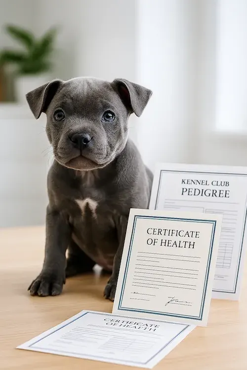</div><figcaption class="tx"><span class="lab">A1 now</span><span>AI image: a blue pup beside printed &quot;Kennel Club Pedigree&quot; and two &quot;Certificate of Health&quot; sheets (one misspelt). We hold no such certificates.</span><span class="src"><code>public/images/kc-registered-staffy-puppies.webp</code> · 500×750</span><span class="src">Current image, to be replaced</span></figcaption></figure>
<figure class="card" style="margin:0"><div class="ph">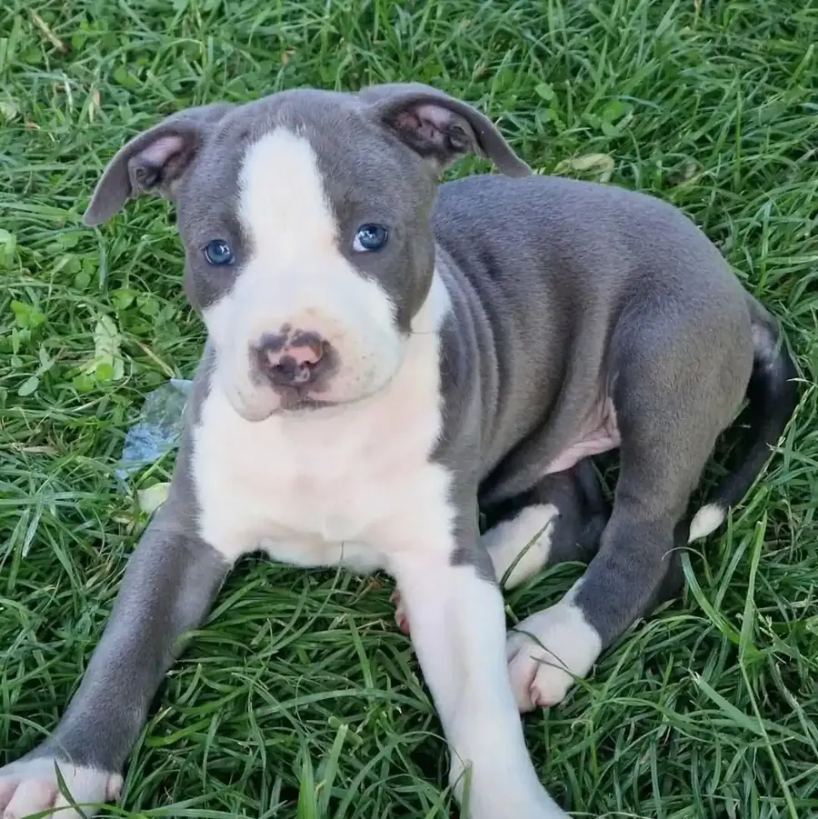</div><figcaption class="tx"><span class="lab">A1-1</span><span>Roman, our blue-and-white boy, lying on grass and looking straight at the camera.</span><span class="src"><code>public/images/puppies/roman-roman1.webp</code> · 1080×1081</span><span class="src">Page&#x27;s own litter (served, not on London; used only on /available-puppies/roman/)</span><span class="src">Pick: <code>file:/images/puppies/roman-roman1.webp</code></span></figcaption></figure>
<figure class="card" style="margin:0"><div class="ph">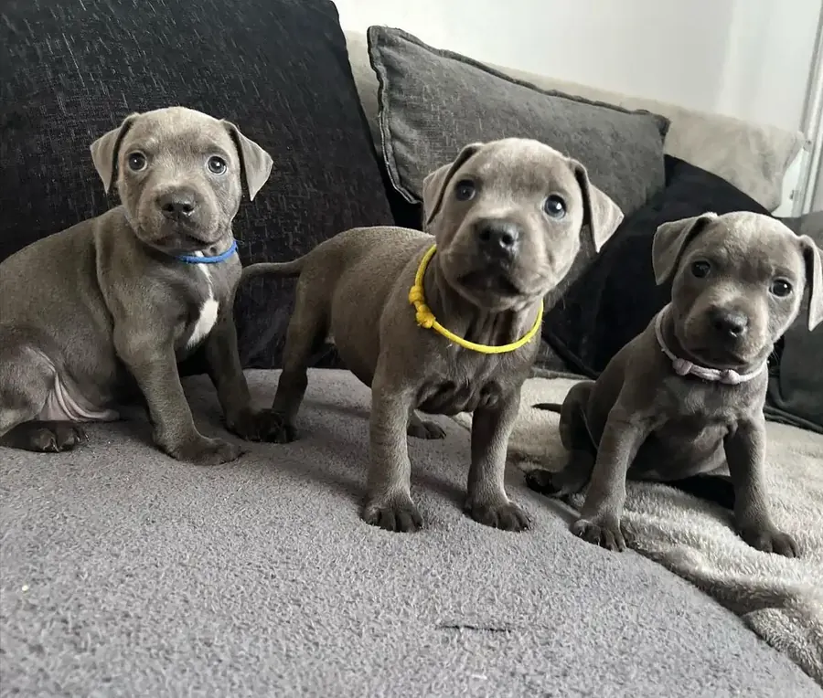</div><figcaption class="tx"><span class="lab">A1-2</span><span>Three blue pups wearing blue, yellow and pink ID collars, sitting on a grey sofa.</span><span class="src"><code>public/images/staffordshire-bull-terrier-for-sale-uk-ready.webp</code> · 1080×917</span><span class="src">Site served, 1 sibling page (/buy-blue-staffy-puppies-uk/)</span><span class="src">Pick: <code>file:/images/staffordshire-bull-terrier-for-sale-uk-ready.webp</code></span></figcaption></figure>
<figure class="card" style="margin:0"><div class="ph">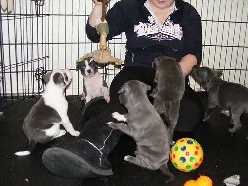</div><figcaption class="tx"><span class="lab">A1-3</span><span>A woman (face out of frame, sweatshirt reading &quot;London&quot;) sits in a wire pen with five blue and blue-pied pups and toys.</span><span class="src"><code>public/images/kennel-club-assured-breeder-vs-others-bluestaffyuk.webp</code> · 500×375</span><span class="src">Site served, 1 sibling page (/buy-staffy-puppies-for-sale-uk/)</span><span class="src">Pick: <code>file:/images/kennel-club-assured-breeder-vs-others-bluestaffyuk.webp</code></span></figcaption></figure>
</div></section>
<section class="slot"><h3>A2. The van in BlueStaffyUK livery with phone digits</h3>
<p class="meta"><b>Slot:</b> <code>img:delivery-defra</code></p><p class="meta"><b>Where:</b> H2 &quot;How Will My Blue Staffy Puppy Get From Carlisle to London?&quot; › H3 &quot;What Does Delivery to London Cost, and How Does My Blue Staffy Puppy Travel?&quot; › H4 &quot;Is the Transport DEFRA-Approved?&quot;</p><p class="meta"><b>The section says:</b> Yes: every delivery we book uses DEFRA-approved pet transport; the price is set by distance inside the £200–£350 band.</p>
<div class="grid">
<figure class="card current" style="margin:0"><div class="ph">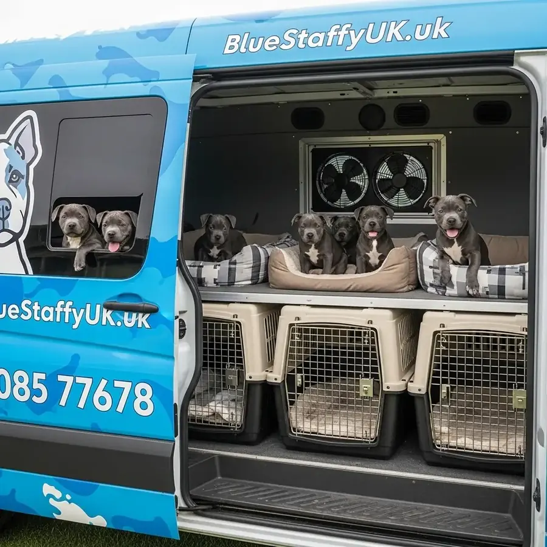</div><figcaption class="tx"><span class="lab">A2 now</span><span>AI image: a blue van painted &quot;BlueStaffyUK.uk&quot; with a phone number, pups on a shelf above crates.</span><span class="src"><code>public/images/blue-staffy-puppy-delivery-uk.webp</code> · 1024×1024</span><span class="src">Current image, to be replaced</span></figcaption></figure>
<figure class="card" style="margin:0"><div class="ph">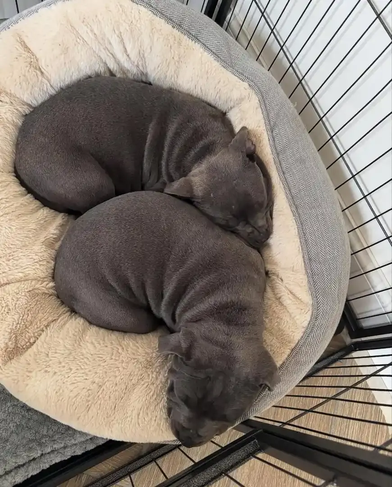</div><figcaption class="tx"><span class="lab">A2-1</span><span>Two blue pups asleep, curled together in a round bed inside a wire crate.</span><span class="src"><code>public/images/blue-staffy-pups-near-you.webp</code> · 870×1080</span><span class="src">Site served, 1 sibling page (/buy-blue-staffy-puppies-uk/)</span><span class="src">Pick: <code>file:/images/blue-staffy-pups-near-you.webp</code></span></figcaption></figure>
<figure class="card" style="margin:0"><div class="ph">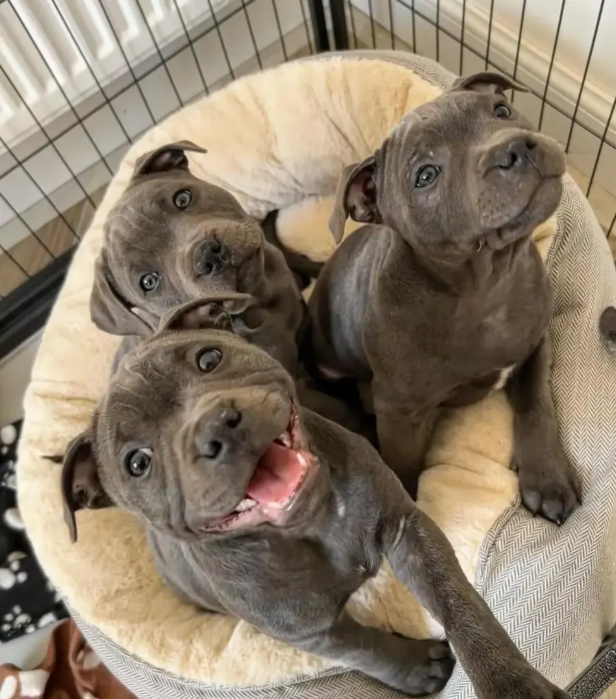</div><figcaption class="tx"><span class="lab">A2-2</span><span>Three blue pups in a round bed inside a wire crate, all looking up at the camera.</span><span class="src"><code>public/images/uk-blue-staffy-breeders-trust.webp</code> · 952×1080</span><span class="src">Site served, 1 sibling page (/buy-blue-staffy-puppies-uk/)</span><span class="src">Pick: <code>file:/images/uk-blue-staffy-breeders-trust.webp</code></span></figcaption></figure>
<figure class="card" style="margin:0"><div class="ph">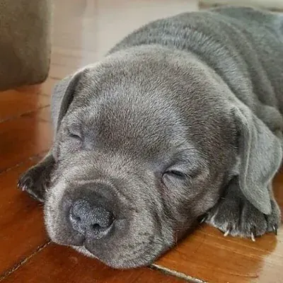</div><figcaption class="tx"><span class="lab">A2-3</span><span>One blue pup fast asleep, chin down on a wooden floor.</span><span class="src"><code>public/images/healthy-blue-staffy-pups-for-sale-certified.webp</code> · 400×400</span><span class="src">Site served, 1 sibling page (/uk-blue-staffy-puppy-buying-guide/); low resolution</span><span class="src">Pick: <code>file:/images/healthy-blue-staffy-pups-for-sale-certified.webp</code></span></figcaption></figure>
</div></section>
<section class="slot"><h3>A3. The &quot;DEFRA transport partners&quot; diagram</h3>
<p class="meta"><b>Slot:</b> <code>img:delivery-cost</code></p><p class="meta"><b>Where:</b> H2 &quot;How Will My Blue Staffy Puppy Get From Carlisle to London?&quot; › H3 &quot;What Does Delivery to London Cost, and How Does My Blue Staffy Puppy Travel?&quot;</p><p class="meta"><b>The section says:</b> UK home delivery costs £200–£350, priced by distance, by DEFRA-approved transport; collection in Carlisle is the alternative; bring a carrier, blanket, water and a towel.</p>
<div class="grid">
<figure class="card current" style="margin:0"><div class="ph">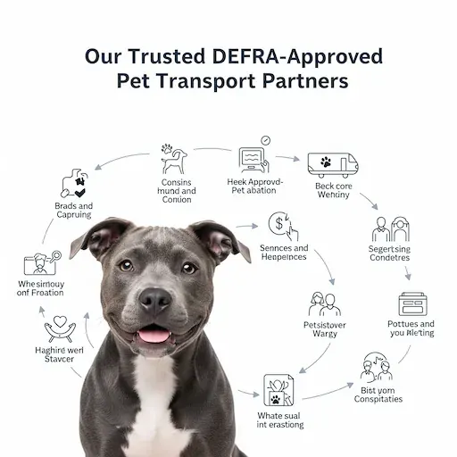</div><figcaption class="tx"><span class="lab">A3 now</span><span>AI infographic &quot;Our Trusted DEFRA-Approved Pet Transport Partners&quot;: a blue Staffy ringed by icons with gibberish labels.</span><span class="src"><code>public/images/defra-pet-transport-process.webp</code> · 512×512</span><span class="src">Current image, to be replaced</span></figcaption></figure>
<figure class="card" style="margin:0"><div class="ph">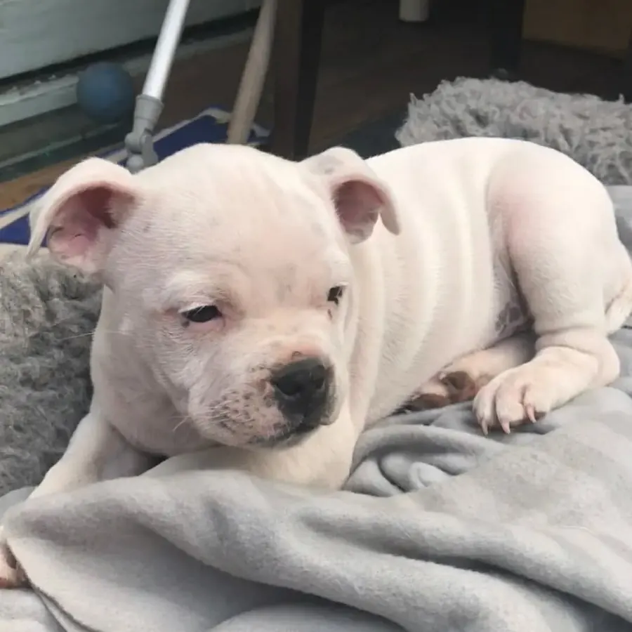</div><figcaption class="tx"><span class="lab">A3-1</span><span>A white pup (Byrd) resting on a grey blanket at home, eyes half closed.</span><span class="src"><code>~/Downloads/BSUK/bluestaffyuk-cms/Assets/Images/Byrd2.jpg</code> · 1080×1080</span><span class="src">Breeder folder; this litter&#x27;s own photo (filename says Byrd); not served anywhere</span><span class="src">Pick: <code>assets:Byrd2.jpg</code></span></figcaption></figure>
<figure class="card" style="margin:0"><div class="ph">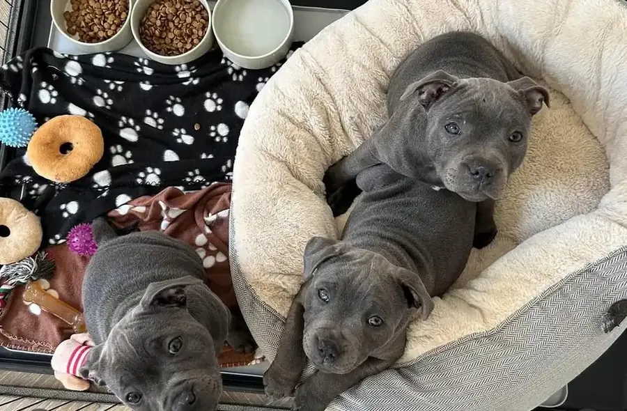</div><figcaption class="tx"><span class="lab">A3-2</span><span>Three blue pups in and beside a round bed, next to food bowls, a water bowl and toys on a paw-print blanket.</span><span class="src"><code>public/images/buy-staffordshire-bull-terrier-uk-now.webp</code> · 918×602</span><span class="src">Site served, 2 sibling pages (/blue-staffy-pup-sale-uk/, /buy-blue-staffy-puppies-uk/)</span><span class="src">Pick: <code>file:/images/buy-staffordshire-bull-terrier-uk-now.webp</code></span></figcaption></figure>
<figure class="card" style="margin:0"><div class="ph">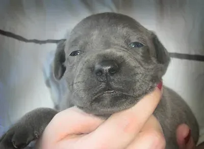</div><figcaption class="tx"><span class="lab">A3-3</span><span>A very young blue pup, eyes half open, held up under the chin by a hand.</span><span class="src"><code>public/images/bluestaffyuk-puppy-delivery-cornwall.webp</code> · 400×293</span><span class="src">Site served, 1 sibling page (/uk-locations/blue-staffy-puppies-uk/); low resolution</span><span class="src">Pick: <code>file:/images/bluestaffyuk-puppy-delivery-cornwall.webp</code></span></figcaption></figure>
</div></section>
<section class="slot"><h3>A4. The &quot;BlueStaffyUK vs Classified Ads&quot; chart</h3>
<p class="meta"><b>Slot:</b> <code>img:litter-counter</code></p><p class="meta"><b>Where:</b> H2 &quot;Which Blue Staffy Puppies Are Available Now, and What Do They Cost?&quot; › H3 &quot;How Much Is Each Blue Staffy Puppy in This Litter?&quot; › H4 &quot;Why Won&#x27;t You Find a Cheap Blue Staffy Puppy on Our Page?&quot;</p><p class="meta"><b>The section says:</b> Our price is the price (£1,500 a boy, £1,700 a girl); it pays for named parents, a home-raised litter, the paperwork and the guarantee; a far lower price is a reason to ask more questions.</p>
<div class="grid">
<figure class="card current" style="margin:0"><div class="ph">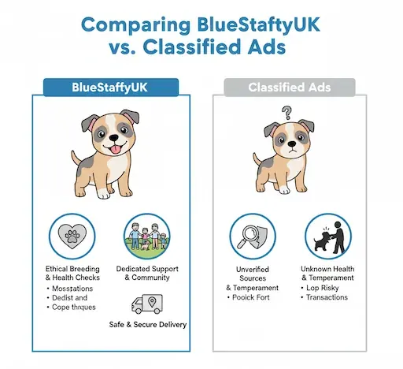</div><figcaption class="tx"><span class="lab">A4 now</span><span>AI chart &quot;Comparing BlueStaffyUK vs. Classified Ads&quot;: cartoon pups and gibberish bullet text.</span><span class="src"><code>public/images/affordable-vs-premium-blue-staffy-breeders-comparison.webp</code> · 512×468</span><span class="src">Current image, to be replaced</span></figcaption></figure>
<figure class="card" style="margin:0"><div class="ph">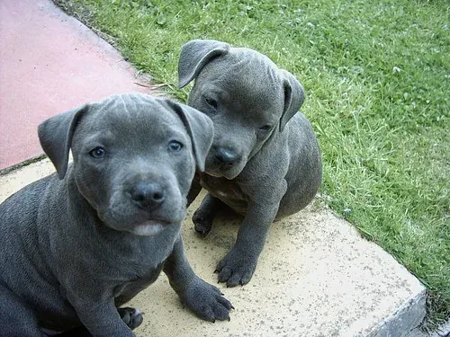</div><figcaption class="tx"><span class="lab">A4-1</span><span>Two blue pups sitting together on a paving slab at the edge of a lawn.</span><span class="src"><code>public/images/buy-staffy-puppies-for-sale-uk-bluestaffyuk.webp</code> · 500×375</span><span class="src">Site served, 1 sibling page (/buy-staffy-puppies-for-sale-uk/)</span><span class="src">Pick: <code>file:/images/buy-staffy-puppies-for-sale-uk-bluestaffyuk.webp</code></span></figcaption></figure>
<figure class="card" style="margin:0"><div class="ph">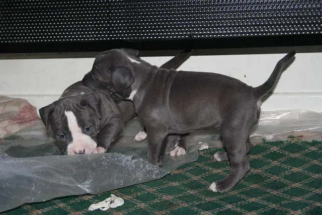</div><figcaption class="tx"><span class="lab">A4-2</span><span>Three young blue and blue-pied pups exploring a whelping pen with a green rug and a loose plastic sheet.</span><span class="src"><code>public/images/kc-staffy-puppies-for-rehoming-uk.webp</code> · 640×427</span><span class="src">Site served, 1 sibling page (homepage)</span><span class="src">Pick: <code>file:/images/kc-staffy-puppies-for-rehoming-uk.webp</code></span></figcaption></figure>
<figure class="card" style="margin:0"><div class="ph">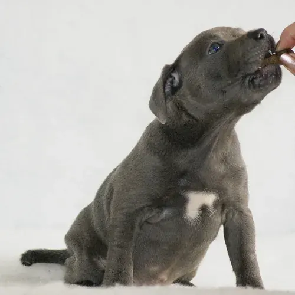</div><figcaption class="tx"><span class="lab">A4-3</span><span>A blue pup with a white chest patch, sitting on a white backdrop and taking a treat from a hand.</span><span class="src"><code>public/images/blue-staffy-bully-puppies-for-sale-uk-kc-certified.webp</code> · 500×500</span><span class="src">Site served, 1 sibling page (/buy-staffy-puppies-for-sale-uk/)</span><span class="src">Pick: <code>file:/images/blue-staffy-bully-puppies-for-sale-uk-kc-certified.webp</code></span></figcaption></figure>
</div></section>
<section class="slot"><h3>A5. The &quot;Myths vs Facts&quot; chart</h3>
<p class="meta"><b>Slot:</b> <code>img:temperament-h2</code></p><p class="meta"><b>Where:</b> H2 &quot;Are Blue Staffies Aggressive, or Just Very Attached to Their People?&quot;</p><p class="meta"><b>The section says:</b> Attached, not aggressive: a well-socialised Staffy is a devoted family dog; the usual problems in young ones come from boredom and too little training.</p>
<div class="grid">
<figure class="card current" style="margin:0"><div class="ph">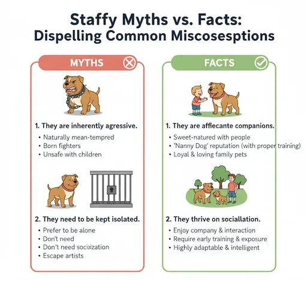</div><figcaption class="tx"><span class="lab">A5 now</span><span>AI chart &quot;Staffy Myths vs. Facts: Dispelling Common Miscosesptions&quot;: cartoon dogs and misspelt text.</span><span class="src"><code>public/images/busting-common-staffy-myths-loving-family-dog.webp</code> · 512×469</span><span class="src">Current image, to be replaced</span></figcaption></figure>
<figure class="card" style="margin:0"><div class="ph">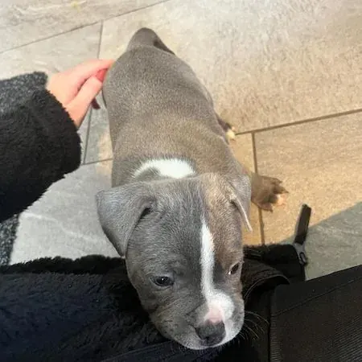</div><figcaption class="tx"><span class="lab">A5-1</span><span>A blue pup with a white blaze resting its chin on someone&#x27;s lap while a hand strokes its back.</span><span class="src"><code>public/images/trusted-uk-breeders-blue-staffy-family.webp</code> · 450×450</span><span class="src">Site served, 1 sibling page (/blue-staffy-uk-breeders/); also on the old About page</span><span class="src">Pick: <code>file:/images/trusted-uk-breeders-blue-staffy-family.webp</code></span></figcaption></figure>
<figure class="card" style="margin:0"><div class="ph">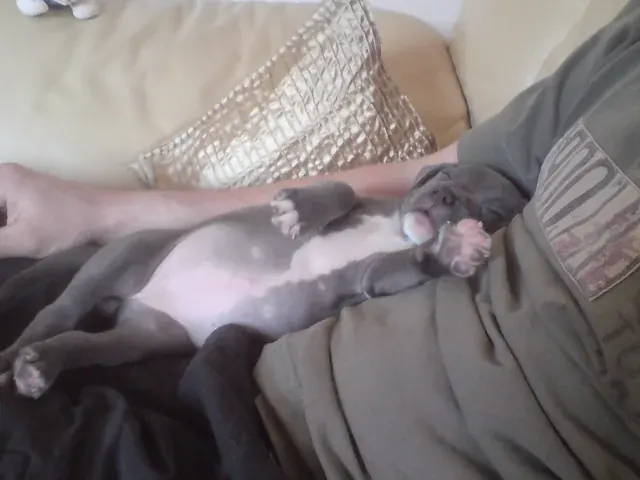</div><figcaption class="tx"><span class="lab">A5-2</span><span>A blue pup fast asleep belly-up across a man&#x27;s lap on a sofa.</span><span class="src"><code>public/images/blue-staffy-puppy-testimonial-cardiff-daniel.webp</code> · 640×480</span><span class="src">Site served, 1 sibling page (/buy-blue-staffy-puppies-uk/)</span><span class="src">Pick: <code>file:/images/blue-staffy-puppy-testimonial-cardiff-daniel.webp</code></span></figcaption></figure>
<figure class="card" style="margin:0"><div class="ph">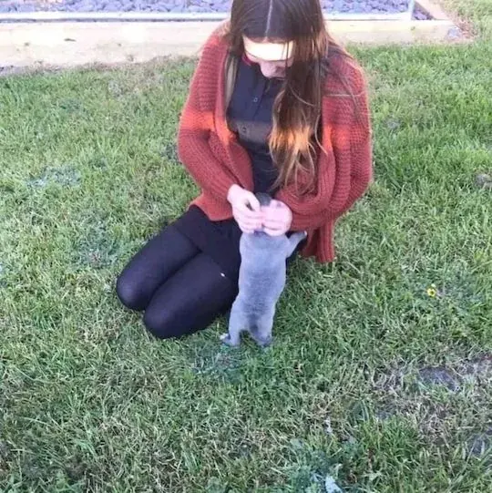</div><figcaption class="tx"><span class="lab">A5-3</span><span>A young woman in a red cardigan kneeling on grass while a blue pup stands up to her hands.</span><span class="src"><code>public/images/reputable-blue-staffy-breeder-manchester-pup.webp</code> · 540×541</span><span class="src">Site served, 1 sibling page (/uk-locations/blue-staffy-puppies-uk/)</span><span class="src">Pick: <code>file:/images/reputable-blue-staffy-breeder-manchester-pup.webp</code></span></figcaption></figure>
</div></section>
<h3>Notes on Section A</h3><ul class="notes"><li>No real photograph of a van, a pet-transport vehicle or a puppy in transit exists in any source searched (the page record, public/images/, the breeder&#x27;s Assets/Images/ folder, the old WordPress uploads). Slots 2 and 3 therefore offer crate, bed and handling photos; a real transport photo would have to come from the breeder.</li><li>The page&#x27;s own unused images are few: the old London page carried no images at all (logo only), and the only litter photos not shown on London are Roman1 (served on Roman&#x27;s own page) and Byrd2 (breeder folder, never served).</li><li>Working rule 11: a reused served file keeps its served alt on first use. Several candidates&#x27; served alts name another place or person: A3-3 (&quot;The Davies Family in Cornwall&quot;), A5-2 (&quot;Smiling Daniel from Cardiff … testimonial quote displayed&quot;, and no quote is in the picture), A5-3 (&quot;at home in Manchester&quot;). That wording would need recording on the board if it changes.</li><li>Low resolution against the 1408×768 in-body box: A2-3 (400px), A3-3 (400px), A5-1 (450px). Every candidate is a real photograph; no infographic, AI image or picture with text in it is proposed.</li><li>Not in scope, but also AI-made on the London page: find-health-certified-staffy-breeders-uk.webp (a vet injecting a puppy, under H2 &quot;What Should a Health Tested Staffy Breeder Show You Before You Buy?&quot;).</li></ul>
<h2>B. The Breeder's Photo · Picked</h2>
<p>Lisa picked this photo on 4 October 2026. On London it is served as a new copy named <code>lisa-bright-blue-staffy-breeder-carlisle.webp</code>, beside the original file, which stays on the server unchanged (rule 11). Its alt names Lisa Bright. Where it goes on the page is a question on the board.</p>
<div class="bgrid">
<figure class="card" style="margin:0"><div class="ph">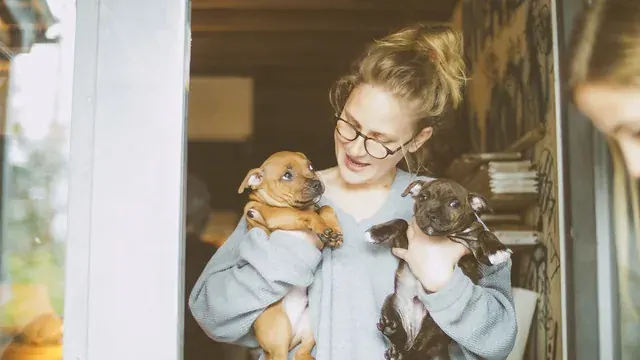</div><figcaption class="tx"><span class="lab">B1 · picked</span><span>Lisa Bright holding two pups, face visible.</span></figcaption></figure>
</div>
<h2>C. Puppy Personality Lines · Drafts for Lisa</h2>
<p>No description of any of the six pups exists in the site data or on the old site. At Lisa's request these drafts were written from each pup's own photo and its coat and sex in data/puppies.json. Some read behaviour from a single photo (Byrd "first to trot over", Ince "checking every corner"), so nothing goes on the site until Lisa approves or rewrites each line on the board.</p>
<table><thead><tr><th>Puppy</th><th>Coat and sex</th><th>Draft line</th></tr></thead><tbody>
<tr><td data-label="Puppy">Roman</td><td data-label="Coat and sex">Blue and white boy</td><td data-label="Draft line">Our blue-and-white boy with a white blaze and bright blue eyes, happiest stretched out on the grass watching everything we do.</td></tr>
<tr><td data-label="Puppy">Byrd</td><td data-label="Coat and sex">White boy</td><td data-label="Draft line">Our solid white boy, sturdy and square-faced, first to trot over and see who&#x27;s come in, then out for a nap on his blanket.</td></tr>
<tr><td data-label="Puppy">Ince</td><td data-label="Coat and sex">Blue boy</td><td data-label="Draft line">A solid blue boy with a white chest flash who goes about with his tail up, checking every corner of the garden fence.</td></tr>
<tr><td data-label="Puppy">Vennie</td><td data-label="Coat and sex">Blue and white girl</td><td data-label="Draft line">A white-faced blue-and-white girl with a blue patch over one eye, curled up soft and calm on the sheepskin rug.</td></tr>
<tr><td data-label="Puppy">Christa</td><td data-label="Coat and sex">Blue girl</td><td data-label="Draft line">A solid blue girl with a white star on her chest and a steady, thoughtful look, sitting up straight as if she knows she&#x27;s being photographed.</td></tr>
<tr><td data-label="Puppy">Cheryl</td><td data-label="Coat and sex">Blue with white blaze girl</td><td data-label="Draft line">A blue girl with a white blaze who lies flat out on the floor beside her toy and looks straight up for attention.</td></tr>
</tbody></table>
</main>